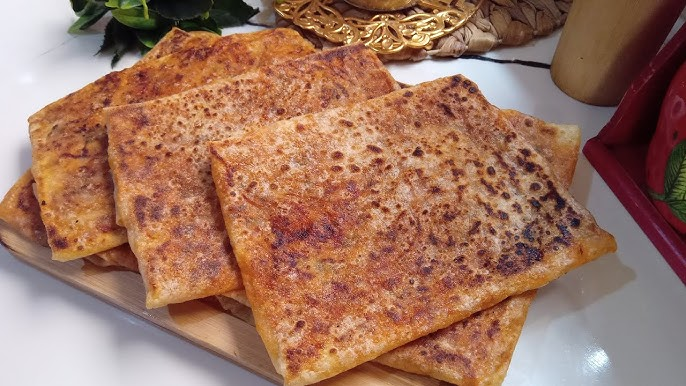

Mhajeb

Image of the final result of the Mhajeb
This is one of the most delicious dishes that you will try,
it's even better when you eat it when it hot and spicy
Ingredients:
- Semolina (fine)
- All-purpose flour
- Salt
- Water
- Olive oil
- Onion
- Tomato
- Red bell pepper
- Green chili pepper (optional, for heat)
- Ground black pepper
- Ground paprika
- Harissa paste (optional)
Steps:
- Mix semolina, flour, salt, and water to form a soft dough.
- Knead the dough until smooth, then divide it into equal balls.
- Cover the dough balls with oil and let them rest.
- Finely chop onions, tomatoes, and peppers.
- Cook the chopped vegetables in a pan with oil, spices, and harissa until soft.
- Flatten a dough ball into a thin sheet using oiled hands.
- Place some filling in the center of the sheet.
- Fold the edges over the filling to form a square.
- Cook the stuffed flatbread on a hot griddle or pan until golden on both sides.
Home